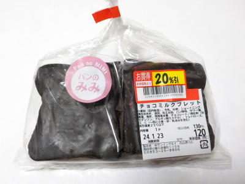

サンインマルイ浜山通り店のチョコミルクブレッド。
2024/01/22

小さい食パンの耳にチョコを付けたものが2つ入ってます。
キメの細かいフコフコしたパンとチョコがよく合っていて、おいしかったです。
今回は割引があって100円くらいで買いましたが、通常価格でも十分お買い得だと思いました。
島根県出雲市渡橋町1158
2024/01/22

小さい食パンの耳にチョコを付けたものが2つ入ってます。
キメの細かいフコフコしたパンとチョコがよく合っていて、おいしかったです。
今回は割引があって100円くらいで買いましたが、通常価格でも十分お買い得だと思いました。